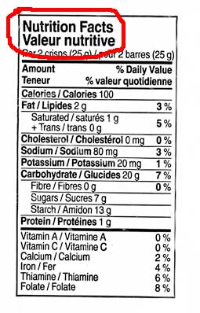
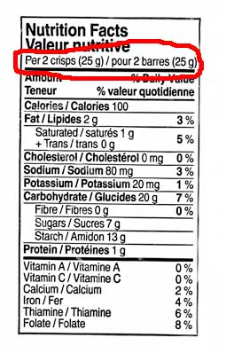
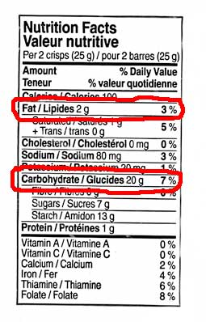

Case Studies #2 - Nutrition Facts table
Context
Your client have made a request to publish online a document where you have the following table to be integrated. To accomplish that, you have been required to follow the Accessibility guideline (WCAG Level AA). [Talk about having an usable table]

Understand the cell type
It's important to understand and identifying each kind of data that can be found in the table
Find the table caption
As per the usable table guideline, the table caption is the lowest header row group level (Level 0).
Find the table description / table summary
There is a difference between a table summary and a group summary. The table summary is a table description. The group summary is often represented by a row named "Total" after a data group.
Find the table row group heading section
A table can only contain one row group heading. His location are always before any data row group. The row group heading always contain the table column and column group definition. If a table have two or more row group heading, each section should be divided in multiple table. However, it's possible for a table to do not have a row group heading.

Note: The columns defined in the row group heading need to have a good structure representation of each cell in all subsequent row group.
Find each data and summary row group
Here we look at data and summary row group that have a direct relation with the table caption

Separate the data row group with the summary row group
The summary row group are ofter smaller size (number of row) than a data row group. A summary row group need to be associated at least to one data row group. Sometime, the summary row group have a different header/data cell patern for a row compared to a row in the data row group.
Data row group
The first row group is identified with the letter A and the second with the letter B.

Summary row group

Indentify and target the level relationship of any sub row group
This is an important step because the data row and the data row group sequence in the table will be influenced to illustrate the data level.
Row Group "A"
There are two sub row group. the first sub row group is identified with the Letter AA and the second with the letter AB

Each sub row group have a summary row group.

Those sub row group (AA and AB) will be qualify to be at the table level 2.
Regarding the other row in the row group A, there relationship belong to the row group A level 1 directly.

Row Group "B"
The row group "B" don't contain any sub row group. That row group table level is 1.
Find what kind of data cell you have
A data cell can be identified by one or more header cell. A data cell is often qualified by a unit measure. Sometime a data cell can be hidden in a cell header or in another data cell.
This process will help to find whitch column heading you need for the table.
In our example, there are three kind of data cell.
- Data cell measured in "unit" assigned to the summary row group level 0.

- Data cell measured in "g/mg" assigned to serveral data row.
 Data cell measured in "%" assigned also to serveral data row.
Data cell measured in "%" assigned also to serveral data row.

Defining the real row group header
The real row group header need to support the data cell defined in each data row group. The support to the summary data cell can be omited.
Here a list of column heading
- "Amount/Teneur" : Column heading for the row header.
- "Weight/Poids" : New column heading issued from hidden data cell.
- "% Daily Value/% valeur quotidienne" : Already know column heading
Indetifying the column group
In our case, there are only two column group. The first group are used to represent the row cell header. And the second group are used to group togheter the two data column.
If you have a table that contain for example a total column after the data column, that will be need to be represented inside a new column group.
Designing the Usable Table
We did an deep analyse of the table to be converted. Now we need to verify if each data group have at least one representative header.
In our example, we don't have a unique data row group header for the row group "A" and "B". The common solution will be to ask the content provider to provide them. In our case, we will use the heading "Minerals and Vitamins / Minéraux et vitamines" for the data row group "B" and "Nutrients elements / éléments nutritifs" for the data row group "A".
Code the table
Now we are ready to start the coding for the usable table. The french content was removed for the clarity.
A summary row group are always after a data row group. The order for the data row group level need to be the lower level to the highest level.
The HTML5 details and summary element was used to add the table caption description.
Now
| Amount of | Weight | % Daily Value |
|---|---|---|
| Minerals and Vitamins | ||
| Vitamin A | 0 % | |
| Vitamin C | 0 % | |
| Calcium | 2 % | |
| Iron | 4 % | |
| Thiamine | 6 % | |
| Folate | 8 % | |
| Nutrients elements | ||
| Others | ||
| Cholesterol | 0 mg | 0 % |
| Sodium | 80 mg | 3 % |
| Potassium | 20 mg | 1 % |
| Protein | 1 g | |
| Fat | ||
| Saturated | 1 g | 5% |
| + Trans | 0 g | |
| Total Fat | 2 g | 3 % |
| Carbohydrate | ||
| Fibre | 0 g | |
| Sugars | 7 g | |
| Starch | 13 g | |
| Total Carbohydrate | 20 g | 7 % |
| Calories | 100 | |
Source Code
<table>
<caption>
<details open="open">
<summary>Nutrition Facts</summary>
<p>Per 2 crisps (25 g)</p>
</details>
</caption>
<colgroup><col></colgroup>
<colgroup><col><col></colgroup>
<thead>
<tr>
<th>Amount of</th>
<th>Weight</th>
<th>% Daily Value</th>
</tr>
</thead>
<tbody>
<tr>
<th colspan="3">Minerals and Vitamins</th>
</tr>
<tr>
<th>Vitamin A</th>
<td></td>
<td>0 %</td>
</tr>
<tr>
<th>Vitamin C</th>
<td></td>
<td>0 %</td>
</tr>
<tr>
<th>Calcium</th>
<td></td>
<td>2 %</td>
</tr>
<tr>
<th>Iron</th>
<td></td>
<td>4 %</td>
</tr>
<tr>
<th>Thiamine</th>
<td></td>
<td>6 %</td>
</tr>
<tr>
<th>Folate</th>
<td></td>
<td>8 %</td>
</tr>
</tbody>
<tbody>
<tr>
<th colspan="3">Nutrients elements</th>
</tr>
<tr>
<th colspan="3">Others</th>
</tr>
<tr>
<th>Cholesterol</th>
<td>0 mg</td>
<td>0 %</td>
</tr>
<tr>
<th>Sodium</th>
<td>80 mg</td>
<td>3 %</td>
</tr>
<tr>
<th>Potassium</th>
<td>20 mg</td>
<td>1 %</td>
</tr>
<tr>
<th>Protein</th>
<td>1 g</td>
<td></td>
</tr>
</tbody>
<tbody>
<tr>
<th colspan="3">Fat</th>
</tr>
<tr>
<th>Saturated</th>
<td>1 g</td>
<td rowspan="2">5%</td>
</tr>
<tr>
<th>+ Trans</th>
<td>0 g</th>
</tr>
</tbody>
<tbody>
<tr>
<th>Total Fat</th>
<td>2 g</td>
<td>3 %</td>
</tr>
</tbody>
<tbody>
<tr>
<th colspan="3">Carbohydrate</th>
</tr>
<tr>
<th>Fibre</th>
<td>0 g</td>
<td></td>
</tr>
<tr>
<th>Sugars</th>
<td>7 g</td>
<td></td>
</tr> <tr>
<th>Starch</th>
<td>13 g</td>
<td></td>
</tr>
</tbody>
<tbody>
<tr>
<th>Total Carbohydrate</th>
<td>20 g</td>
<td>7 %</td>
</tr>
</tbody>
<tfoot>
<tr>
<th>Calories</th>
<td colspan="2">100</td>
</tr>
</tfoot>
</table>
Before
About the data level
Same table but the text of each cell header was replaced by the data table level
| Amount | Weight | % Daily Value |
|---|---|---|
| Level 1 | ||
| Vitamin A | 0 % | |
| Vitamin C | 0 % | |
| Calcium | 2 % | |
| Iron | 4 % | |
| Thiamine | 6 % | |
| Folate | 8 % | |
| Level 1 | ||
| Level 2 | ||
| Cholesterol | 0 mg | 0 % |
| Sodium | 80 mg | 3 % |
| Potassium | 20 mg | 1 % |
| Protein | 1 g | |
| Level 2 | ||
| Saturated | 1 g | 5% |
| + Trans | 0 g | |
| Summary Group [preceding Level 2] | 2 g | 3 % |
| Level 2 | ||
| Fibre | 0 g | |
| Sugars | 7 g | |
| Starch | 13 g | |
| Summary Group [preceding Level 2] | 20 g | 7 % |
| Summary Group [preceding Level 0] because of the "tfoot" row group tag used, otherwise this summary group will be set to preceding level 1] |
100 | |
- Date modified: